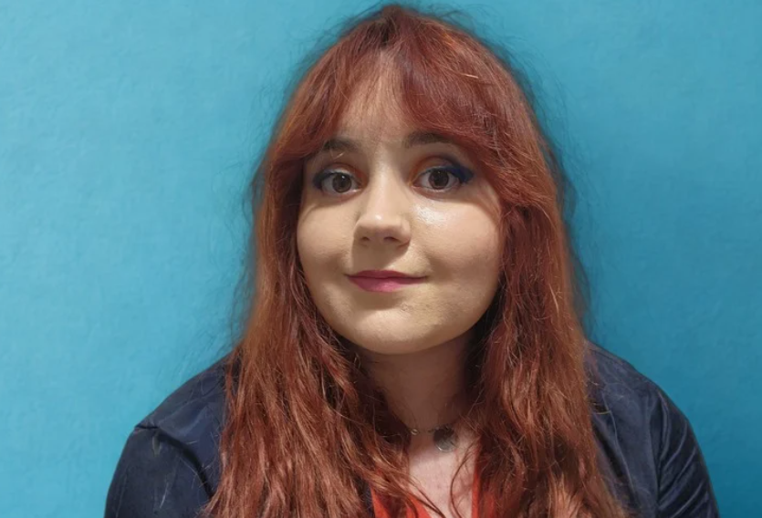
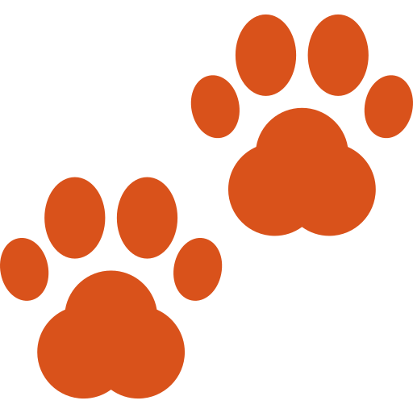
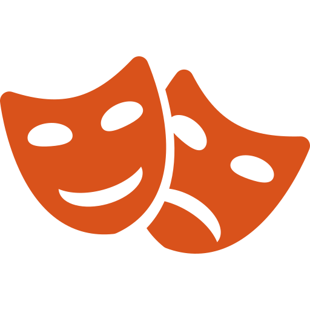
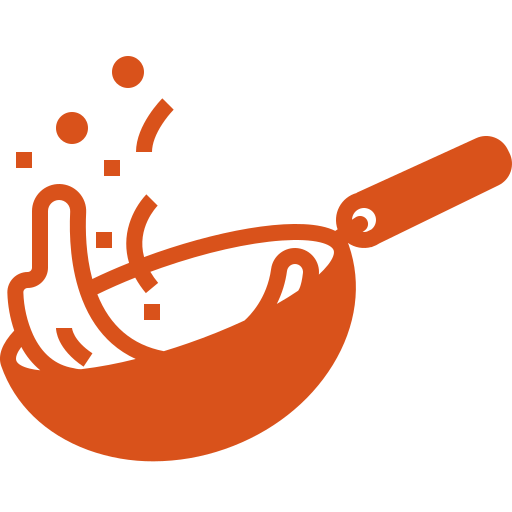
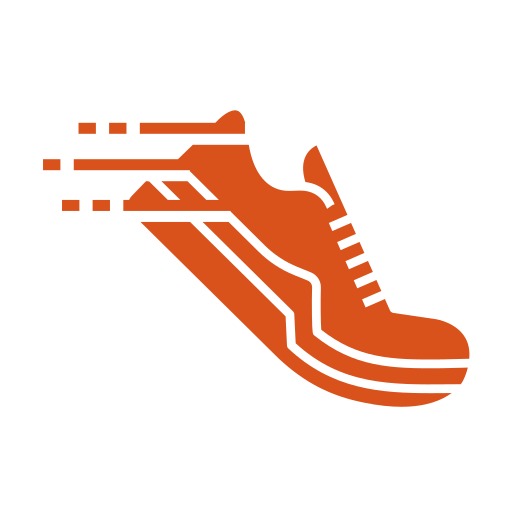
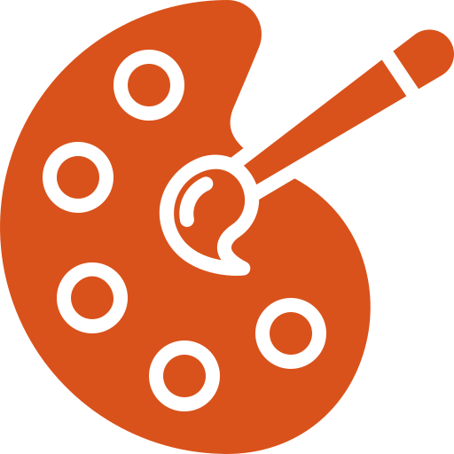

Ingénieure Data & Intelligence Artificielle
Future diplômée de Polytech Nantes, je donne du sens à la technologie en alliant expertise en analyse de données, engagement associatif et curiosité humaine profonde. Mon parcours est guidé par l'envie de construire des outils utiles, inclusifs et éthiques.

Développement en autonomie totale d'une extension musicale pour un jeu éducatif sous Unity et C#. Travail sur la reconnaissance de notes et l'audio, dans un environnement 100 % anglophone.
Conception d'un outil de gestion de formation et d'analyse de données. Visualisation via DigDash (JS, HTML/CSS), extractions SQL, et utilisation de Grist pour le suivi d'indicateurs stratégiques.
Organisation et animation d'ateliers de programmation et robotique pour des enfants de 7 à 17 ans (Scratch, mBlock). Vulgarisation de concepts techniques à travers des projets ludiques.
Soin et assistance auprès des chiens, observation et signalement de blessures ou d'inconforts. Une première expérience alliant attention aux détails et amour des animaux.
Machine learning, Big Data, statistiques avancées, visualisation de données, IA générative. Formation en alternance alliant théorie et pratique.
Informatique, Automatique, Robotique et Réseaux. Une année déterminante pour affiner mon orientation vers la Data et l'IA.
Maths, physique, chimie, informatique, thermodynamique. Fondations solides en raisonnement analytique et résolution de problèmes.
Spécialité mathématiques. LV1 Anglais, LV2 Allemand, LV3 Chinois (option).
Permis B (véhicules manuels et automatiques).
Coordination administrative, rédaction des documents officiels, lien avec les administrateurs·ices. Accessibilité et rigueur au cœur du fonctionnement associatif.
Promotion de l'inclusion des jeunes en situation de handicap dans les milieux académiques et professionnels. Campagnes de sensibilisation et travail inter-associatif.
Organisation d'événements d'intégration pour les apprentis ingénieurs. Gestion logistique et création d'environnements inclusifs.
Interface entre les étudiants et l'administration, participation aux conseils d'administration et représentation lors des assemblées générales.
Amélioration continue, tableaux de bord de performance et optimisation des processus organisationnels pour 185 000 élèves ingénieurs.
Coordination nationale des associations étudiantes, gestion de la documentation et organisation des assemblées générales. Représentation de 185 000 élèves.
Supervision de 9 clubs artistiques (théâtre, musique, photo, cinéma…). Organisation d'expositions, concerts et événements culturels.
Encadrement d'une équipe de 7 étudiants, organisation de soutien en programmation et de tournois jeux vidéo, gestion de partenariats (Sopra Steria, Boulanger).
Représentation des intérêts étudiants dans les instances stratégiques, participation aux prises de décision institutionnelles.

Passionnée par les chiens depuis l'enfance avec Savannah, ma dalmatienne. Je me prépare à passer la certification ACACED et explore la photographie canine comme moyen d'expression créative.
Piano classique (Beethoven, Mozart, Einaudi), guitare pour créer du lien. La musique comme fil conducteur, aujourd'hui aussi au service du chant.
League of Legends, Dofus, Hollow Knight, Animal Crossing, Pokémon... Des univers variés qui ont nourri ma curiosité et ma pensée stratégique dès l'adolescence.
Irlande du Nord, Sénégal (voyage humanitaire), Allemagne, Suède, Espagne, Portugal, Italie. Découvrir le monde pour mieux comprendre les autres.

Pratiqué au collège et lycée comme espace d'expression personnelle. Sur scène, la liberté d'incarner sans être jugée : une école de confiance en soi.
Compagne d'enfance et d'adolescence, la lecture reste un espace de rêve et d'exploration au-delà du réel.
Née au Bureau des Arts, cette passion pour capturer l'instant s'oriente vers les animaux, les bâtiments et les paysages : préserver la beauté du monde.

De la pâtisserie aux plats salés, créer quelque chose de A à Z en sachant exactement ce qu'il contient. Thérapeutique et valorisant.

Un défi personnel profond : on m'avait dit enfant que je ne pourrais jamais courir. Aujourd'hui je m'entraîne pour prouver que rien n'est impossible.

Formes, nuances, couleurs abstraites. Un moyen de se détendre, jouer avec la créativité et apporter de la beauté au monde.
La santé mentale est une cause qui me tient profondément à cœur, nourrie par mon propre parcours de vie. Depuis l'adolescence, je vis avec plusieurs troubles psychiques (un chemin semé d'embûches, qui m'a menée jusqu'à l'hospitalisation psychiatrique). Une expérience difficile, mais qui m'a appris la résilience, la connaissance de soi, et la capacité à avancer même quand tout semble figé.
En 2023, j'ai créé un compte Instagram pour briser les tabous autour de la santé mentale et partager une parole bienveillante. Mon objectif : montrer que les différences psychiques ne sont pas des défauts — elles s'accompagnent souvent de forces uniques.
C'est aussi ce qui guide mon intérêt pour des projets data orientés santé mentale et bientraitance — là où la technologie peut vraiment servir l'humain.
Comprendre les difficultés des autres, sans jugement.
Surmonter les obstacles et s'adapter avec force.
Identifier ses émotions et ses besoins pour mieux avancer.
Construire des espaces où chacun·e a sa place.
Je recherche une opportunité en CDI à partir d'octobre 2026 dans un environnement où l'humain est une priorité. N'hésitez pas à me contacter pour échanger !
📍 Nantes — disponible pour relocalisation Grand Est / Nancy